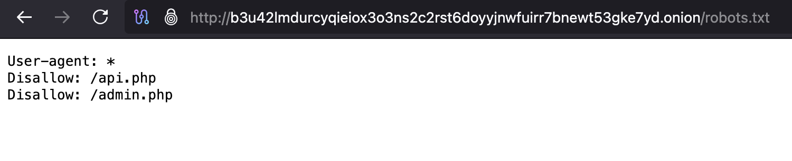
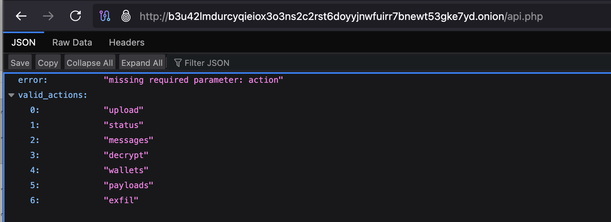
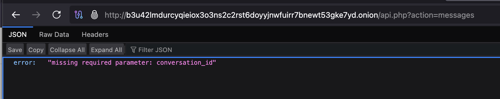
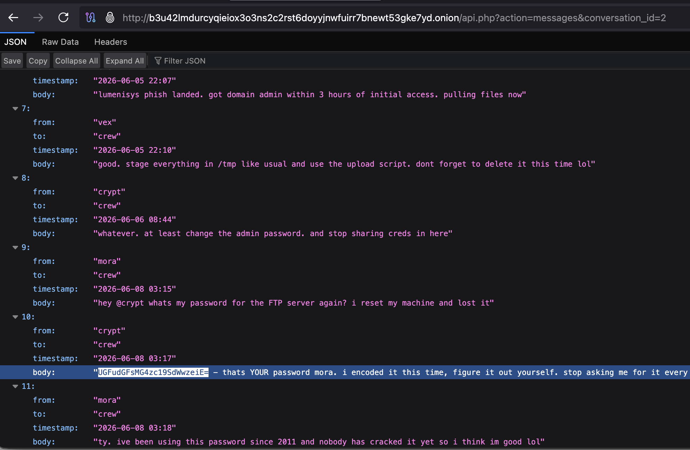
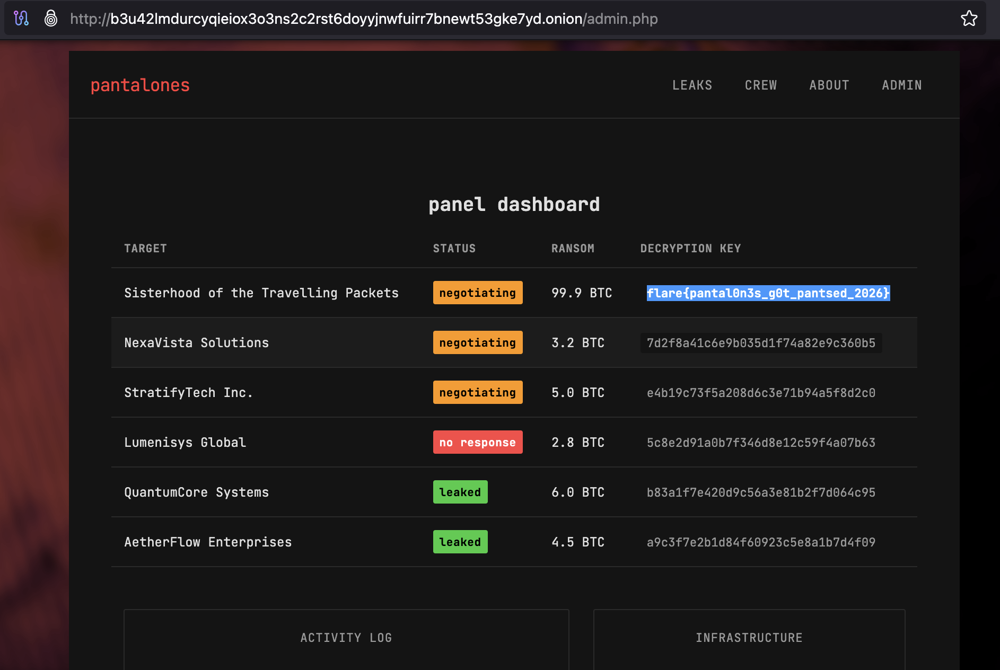
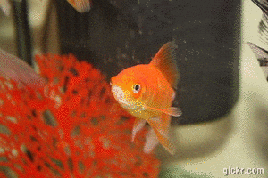

Few days ago, I participated in a CTF to get away from the lingering chaos and solve some puzzles. I almost forgot about the CTF until I checked my mail. I saw the access link and clicked on it to dive straight in. But welp, I couldn’t access it. I’m checking my Wi-Fi connection to figure out what’s wrong, until I saw the URL. It was an onion site and required a Tor browser. That’s what an attention span of a goldfish does to you.
The CTF scenario was based on a ransomware group that would steal files and upload it online onto their website. It showed you files they’ve leaked.
Now what you do? Your first instinct is to go through the leaked files they’ve uploaded. You see the files with actual production grade names including a file named “api_keys_internal.yaml”. So, I checked the files for a possible hint. There were lots of dummy keys in it. You might think one of those keys is a flag. Hence, I started looking for strings, especially the ones with with ‘=’ in the end. That would mean it’s a base64 encoded string. Very common in CTFs. But... but… there are so many keys and none ending with a ‘=’!
I gave the contents of that file to an LLM to check for unusual string patterns. I went through the potential links present in the code as well. I saw the URL producing a certain output. I also tried ‘inspect elements’. Nothing useful.
Then I carefully read the output my LLM provided to me and saw that it suspected that the files could be a distraction to throw me off in a different direction. So now what do you do?
Work smart. Sometimes reading instructions carefully helps. You can also check out CTF’s official discord support channel. You might find something that could spark an idea. I’ve done this a few times, it’s just a nudge to push you in the right direction. As a result, I found out that something was wrong with the site itself.
First thing I did was check for the existence of a “robots.txt” file. This file is a simple text document located in the root directory of a website which tells the web crawlers or the bots what files and folders they can and cannot access on the domain.
I discovered two endpoints by doing that. Then I tried to access each endpoint. Et voila look at that!

I checked the error messages and found out potentially correct formats to use to get to the right clues. I was able to access conversations from one of the end points I accessed. I kept messing with the URL to follow the conversation trail.


One stupid move spotted in the conversation! I saw the password. I spotted my “=” I was looking for. The base64 string decoded to “Pantal0n3s_Rul3z!”.

But wait is this it? Nope. There’s was more. I remembered there was one more endpoint remaining for me to check. The admin page. It took me to the login workflow. I knew who the user was from the chats. I found the password as well. All that was left for me to do was login. I entered the creds and boom! Found the flag!
Flag = flare{pantal0n3s_g0t_pantsed_2026}

It was a fun little CTF challenge that I enjoyed working on. Also taught me how miserable my attention span is.
